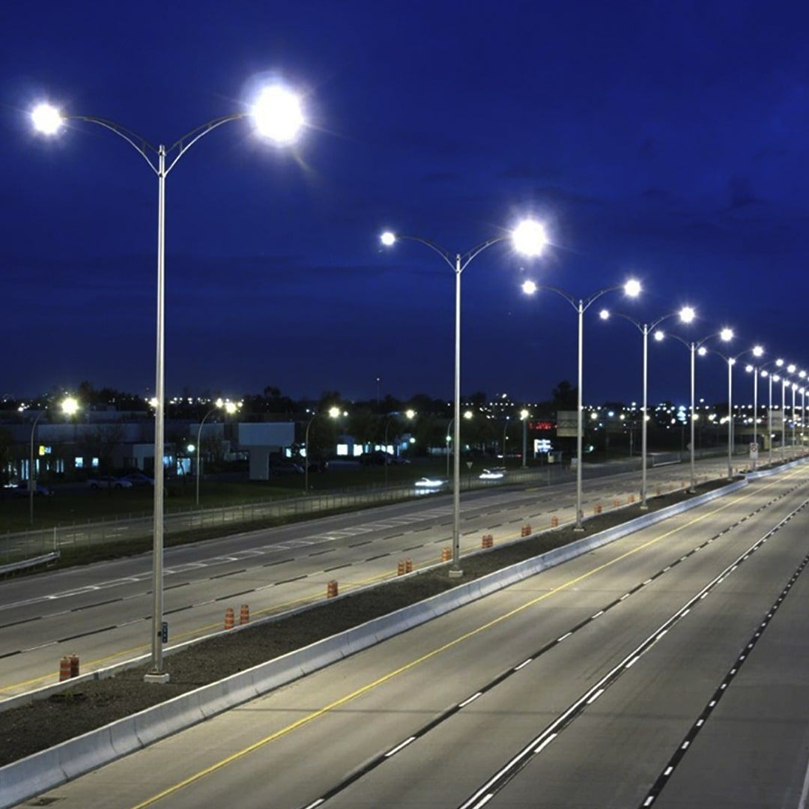
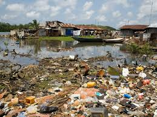

En esta página estaré describiendo mi proyecto final para ayudar a mi comunidad. Ayudaría a mi comunidad en muchos temas, pero me concentraré en algunos.
En la República Dominicana la forma más común de reductores de velocidad es el llamado “policía acostado”. Su nombre es una adaptación de las funciones de los agentes de tránsito para regular la circulación, asumiendo de forma jocosa como parte de la jerga dominicana.
Esto ayudaría mucho a mi comunidad, porque pasan muchos motores rápidos y por allá hay muchos niños, si se pusieran por lo menos de a dos en cada calle recta se evitarian muchos accidentes y no perdieran la vida muchas personas, ya que esto haría que bajaran la velocidad.
Las lámparas de calle son un tipo de iluminación que se instala en el exterior de un edificio o en espacios públicos, como calles, parques y plazas. Suelen tener un diseño más robusto y resistente para soportar las condiciones climáticas y el uso constante.
Pondría más lámparas para que las calles estén iluminadas, arreglaria las lámparas dañadas y les diera mantenimiento a las demas.
La salud es un estado de bienestar que puede ser visto a nivel subjetivo o a nivel objetivo. El término salud se contrapone al de enfermedad, y es objeto de especial atención por parte de la medicina y de las ciencias de la salud.
Haría un hospital bien preparado para las personas de mi comunidad, ya que la salud es lo más importante.
Se entiende por contaminación ambiental cuando existe la presencia de sustancias nocivas en el agua, aire o suelo. Las sustancias nocivas son lo que llamamos contaminantes ambientales, pudiendo tener diferente origen. Además, se encuentran en diferentes concentraciones y en diferentes lugares
Pondría a los encargados de limpiar las calles a limpiar las cunetas, ahí se aposa mucha agua y también basura, eso crea enfermedades y mal olor.
